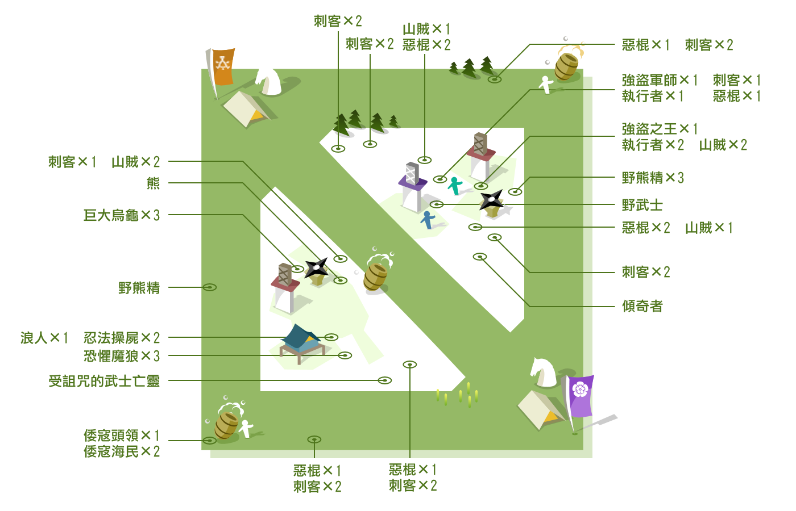

除上圖所示的定點中立NPC，尚有三種中立NPC隨事件隨機觸發，分別為
1. 強盜殘兵 擊殺「強盜之王」後特定時間隨機出現於一路中央
2. 國一揆 動亂系統觸發，隨機出現於一路中央
3. 百姓一揆 動亂系統觸發，隨機佔領一路的南蠻商人
1. 強盜殘兵 擊殺「強盜之王」後特定時間隨機出現於一路中央
2. 國一揆 動亂系統觸發，隨機出現於一路中央
3. 百姓一揆 動亂系統觸發，隨機佔領一路的南蠻商人
-
- 不復活
- 強盜之王、受詛咒的武士亡靈
- 160秒
- 刺客、山賊、惡棍、執行者
- 130秒
- 其餘中立NPC
中立NPC復活系統CDCDCD -
- 每180秒
- 增加50生命、12攻擊力
中立NPC升級系統UPUP升級有15次，總花費2,700秒，共計45分
一般中立NPC
- 惡棍
- 雜魚兵，伴隨著其他同夥。
- 等級 1
生命 805
法力 150
傷害 28 - 29
傷害類型 普通
裝甲 2
裝甲屬性 重型
技能 融影、淬毒武器
擊殺賞金 26~28
兵力獎賞 --
- 山賊
- 雜魚兵，伴隨著其他同夥。
- 等級 2
生命 705
法力 800
傷害 26 - 29
傷害類型 穿刺
裝甲 2
裝甲屬性 重型
技能 融影
擊殺賞金 21~23
兵力獎賞 --
- 刺客
- 雜魚兵，伴隨著其他同夥。
- 等級 3
生命 805
法力 125
傷害 34 - 39
傷害類型 穿刺
裝甲 2
裝甲屬性 中甲
技能 融影、淬毒武器
擊殺賞金 27~31
兵力獎賞 --
- 野熊精
- 會施放削弱敵人防護的法術，夜晚時進入睡眠。
- 等級 3
生命 750
法力 200
傷害 32 - 40
傷害類型 普通
裝甲 3
裝甲屬性 重型
技能 妖火
擊殺賞金 30~34
兵力獎賞 --
- 執行者
- 相較於同夥們，戰鬥能力稍強，不過仍是個雜魚。
- 等級 4
生命 985
法力 175
傷害 48 - 53
傷害類型 普通
裝甲 2
裝甲屬性 重型
技能 融影、無想轉生
擊殺賞金 38~44
兵力獎賞 --
- 巨大烏龜
- 堅韌、皮厚耐打的巨大烏龜，三隻為一群體。
- 等級 4
生命 995
法力 365
傷害 55 - 61
傷害類型 普通
裝甲 4
裝甲屬性 重型
技能 --
擊殺賞金 44~52
兵力獎賞 --
- 恐懼魔狼
- 三隻一群，長有兇殘的利爪，攻擊時可造成更高的傷害。
- 等級 4
生命 995
法力 400
傷害 55 - 61
傷害類型 普通
裝甲 4
裝甲屬性 重型
技能 一擊斬
擊殺賞金 44~52
兵力獎賞 --
- 熊
- 傷害與血量相當高，不易應付的野熊，夜晚時進入睡眠。
- 等級 4
生命 1,600
法力 400
傷害 86 - 93
傷害類型 混沌
裝甲 11
裝甲屬性 重型
技能 --
擊殺賞金 67~81
兵力獎賞 --
- 忍法操屍
- 由忍法操控，陣亡後繼續為主人效命戰鬥的行屍走肉。
- 等級 4
生命 1,015
法力 350
傷害 55 - 61
傷害類型 普通
裝甲 5
裝甲屬性 重型
技能 --
擊殺賞金 45~50
兵力獎賞 --
- 倭寇海民
- 棲息於水邊，襲擊並搶奪路人的倭寇群，夜晚時進入睡眠。
- 等級 4
生命 665
法力 100
傷害 32 - 36
傷害類型 普通
裝甲 2
裝甲屬性 重型
技能 攻擊時有16%機率
暈眩敵人0.7秒
擊殺賞金 49~57
兵力獎賞 --
- 野蠻人
- 會以網子捕捉囚禁敵人的野蠻人，夜晚時進入睡眠。
- 等級 5
生命 2,000
法力 350
傷害 55 - 65
傷害類型 穿刺
裝甲 4
裝甲屬性 重型
技能 天羅地網、精準之光
擊殺賞金 55~65
兵力獎賞 1
- 傾奇者
- 難纏的傾奇者，會施展自我修復的奇術，夜晚時進入睡眠。
- 等級 5
生命 2,000
法力 500
傷害 63 - 68
傷害類型 混沌
裝甲 3
裝甲屬性 重型
技能 自我修復
擊殺賞金 55~65
兵力獎賞 1
- 倭寇頭領
- 棲息於水邊，襲擊並搶奪路人的倭寇群，夜晚時進入睡眠。
- 等級 4
生命 1,900
法力 750
傷害 131 - 139
傷害類型 混沌
裝甲 2
裝甲屬性 重型
技能 邪法、詛咒
擊殺賞金 105~125
兵力獎賞 1
- 被放逐的上忍
- 具強大的戰鬥能力，隨侍為令人恐懼的忍法操屍。
- 等級 6
生命 2,700
法力 300
傷害 101 - 107
傷害類型 混沌
裝甲 10
裝甲屬性 重型
技能 --
擊殺賞金 108~124
兵力獎賞 1
強力中立NPC
- 受詛咒的武士亡靈
- 戰意、執念皆無比強韌的武士亡靈，擊敗後可獲得「分靈之諾」，佩帶者將被賦予強大戰力。
- 等級 6
生命 18,550
法力 1,500
傷害 305 - 375
傷害類型 混沌
裝甲 30
裝甲屬性 重型
技能 詛咒、減少50傷害、
碎裂擊、回饋、偵查者
擊殺賞金 450
兵力獎賞 1
- 強盜之王
- 山寨的強盜之王，勢力龐大，不容小覷。成功討伐後擊殺者可獲得賞金500，其隊員個別獲得300。
- 等級 7
生命 10,600
法力 500
傷害 126 - 145
傷害類型 混沌
裝甲 12
裝甲屬性 重型
技能 指令靈氣、一擊斬、
監察者
擊殺賞金 500/300
兵力獎賞 2
特殊中立NPC
- 強盜殘兵
- 強盜之王遭擊敗後，誓言為主子報仇的餘黨，於特定時間隨機攻入某路戰線。
- 等級 1
生命 1,500
法力 300
傷害 41 - 46
傷害類型 普通
裝甲 1
裝甲屬性 重型
技能 --
擊殺賞金 42~46
兵力獎賞 --
- 國一揆
- 戰火連綿、政局動盪，國人聯合農民發動武裝起義，試圖奪取政權了。
- 等級 1
生命 2,250
法力 300
傷害 91 - 96
傷害類型 普通
裝甲 6
裝甲屬性 重型
技能 --
擊殺賞金 52~54
兵力獎賞 --
- 百姓一揆
- 戰爭不斷，過重的年貢使百姓民不聊生，訴求減免年貢而發起了暴動。
- 等級 1
生命 1,850
法力 300
傷害 71 - 76
傷害類型 普通
裝甲 3
裝甲屬性 重型
技能 --
擊殺賞金 37~39
兵力獎賞 --